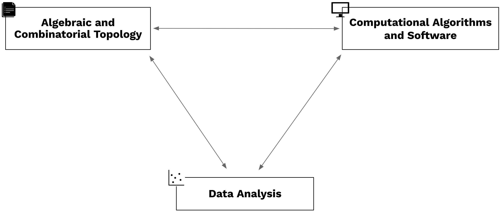

APPLIED ALGEBRAIC TOPOLOGY
 Kuramoto models on geometric graphs
and Hodge theory
XIMENA FERNANDEZ
Kuramoto models and synchronization
System of oscillators
\[ \frac{d\theta_i}{dt} = \omega_i + \frac{1}{n}\sum_{j=1}^{n} \omega_{ij}\sin(\theta_j - \theta_i), \quad i = 1, 2, \dots, n; \](Kuramoto, 1975)

$\quad \quad$ where:
- $ \theta_i(t) \in [0, 2\pi)$ is the phase of the oscillator $i$ at time \( t \),
- $ \omega_i $ is the natural frequency of the oscillator $i$,
- $ \omega_{ij}$ strength of the coupling between oscillators $i$ and $j$,
- $ n $ is the total number of oscillators.
A graph is globally synchronizing if in the limit $t\to \infty$ all oscillators are in phase, starting from all initial conditions except a set of measure zero.
Question: How the structure of the graph determines synchronization?
Dynamical systems
Removing natural frequency
Assume:
- $\omega_i=\omega$ for all $i$ and replace $\widehat{\theta}(t) = \theta(t)-wt$.
- $\omega_{ij}=1$ for all $i,j$ \[ \frac{d\theta_i}{dt} = \omega_i + \frac{1}{n}\sum_{j=1}^{n} \omega_{ij}\sin(\theta_j - \theta_i), \quad i = 1, 2, \dots, n; \]
Dynamical systems
Removing natural frequency
Assume:
- $\omega_i=\omega$ for all $i$ and replace $\widehat{\theta}(t) = \theta(t)-wt$.
- $\omega_{ij}=1$ for all $i,j$ \[ \frac{d\widehat{\theta}_i}{dt} = \frac{1}{n}\sum_{j=1}^{n} a_{ij}\sin(\widehat{\theta}_j - \widehat{\theta}_i), \quad i = 1, 2, \dots, n; \]
Gradient system
\[\frac{d\widehat{\theta}_i}{dt} =-\nabla V, \]
\[V=-\frac{1}{2}\sum_{j=1}^{n} a_{ij}\cos(\widehat{\theta}_j - \widehat{\theta}_i),
\quad i = 1, 2, \dots, n;
\]
All the trajectories flow monotonically downhill and converge to an equilibium point.
- Equilibrium point: $\frac{d\widehat{\theta}_i}{dt} =0$
- Linearly stable: Jacobian has all negative eigenvalues.
Examples
- Synchronizing graphs:
- Complete graphs
- Trees
- Dense graphs: $\delta(G)=min(deg_{v\in G}(v))>0.7889(n-1)$
- Connected Erdos Reyni graphs
- Non-synchronizing graphs:
- Cycles $C_n$
- Circulant graphs: every vertex is connected to its $k$-neighbors.
Potential lines of research:
- Cayley graphs: How the properties of the group $G$ determine synchronization on $\Gamma(G)$?
- Combinatorial topology: elementary moves that preserve synchronization/non-sychronization properties
More examples
Random geometric graphs
A random geometric graph is an undirected graph constructed by randomly sampling $n$ nodes in a metric space according to some probability distribution, and connecting two nodes by an edge if their distance is less than $\epsilon$.
Kuramoto on random geometric graphs
$G=(V,E)$ with $V=\{x_1, x_2, \dots, x_n\}$ sample of a metric space $(X,d)$ and $(x_i, x_j)\in E$ if $d(x_i, x_j)<\epsilon$. \[ \frac{d\theta_i}{dt} = \frac{1}{n}\sum_{j=1}^{n} \omega_{ij}\sin(\theta_j - \theta_i), \quad i = 1, 2, \dots, n; \] with $w_{ij} = \frac{1}{\epsilon^2 N_i}$, $N_i$ the number of neighbors of $x_i$
Connection with heat equation
Claim: For geometric graphs in a manifold $M$, the solutions of the Kuramoto model on a sample $X_n$ of $M$ converge to solutions of the heat equation on $M$.
Connection with Hodge theory
Conjecture: The Kuramoto model on random geometric graphs over spaces with non-trivial homology does not synchronize.
Persistence beyond homology
Persistence beyond homology
New topological invariants of data
Problem: Homology may fall short in capturing topological aspects of data.
Persistence beyond homology
New topological invariants of data
Problem: Homology may fall short in capturing topological aspects of data.
- Efficient presentations of presentations of $\pi_1(K)$.
- Persistent fundamental group.
- Software in GAP.
Persistent knot invariants
- Fundamental group of the complement: $\pi_1(S^3\smallsetminus K)$
- Alexander polynomial.
- Reidemeister torsion.
Related to: X. Fernandez. Morse theory for group presentations. Transactions of the AMS. (2024)
- Applications
- Classification of knotted proteins.
- Classification of chaotic attractors. $~~~~~~~~$


$~~$ Lorenz attractor$~~~~~~~~~~~~~~~~~~~$Chua attractor